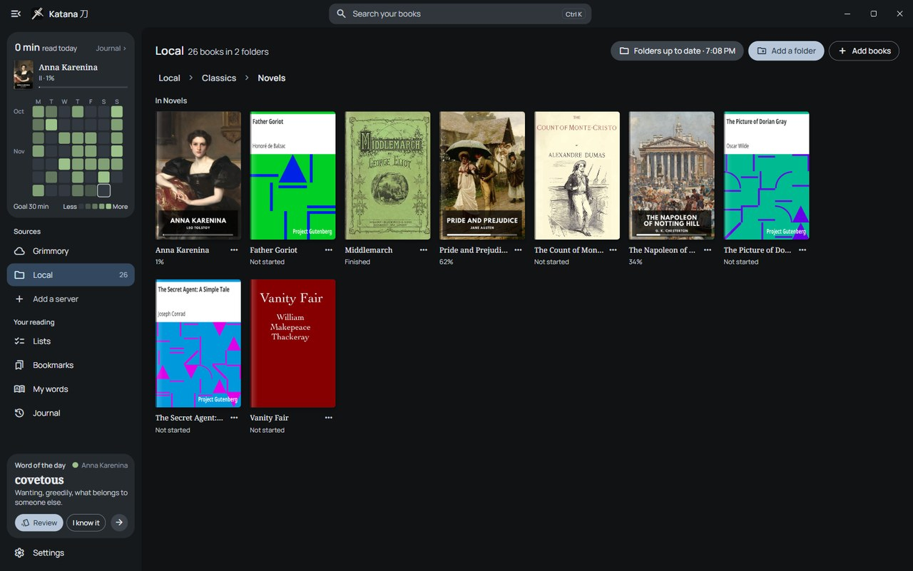
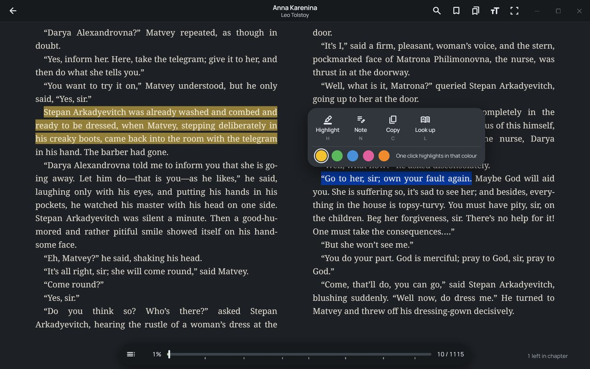
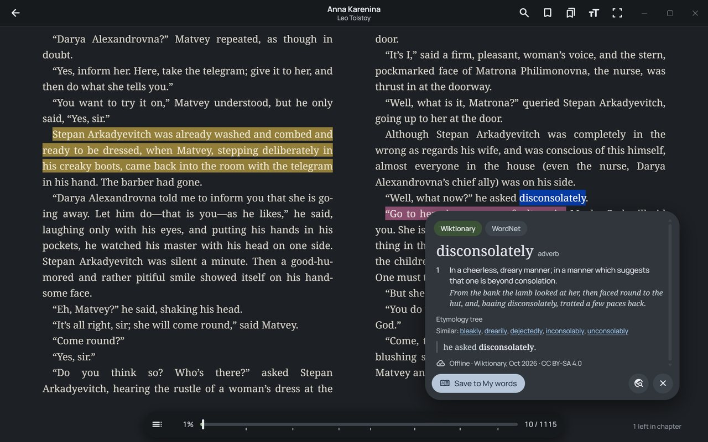
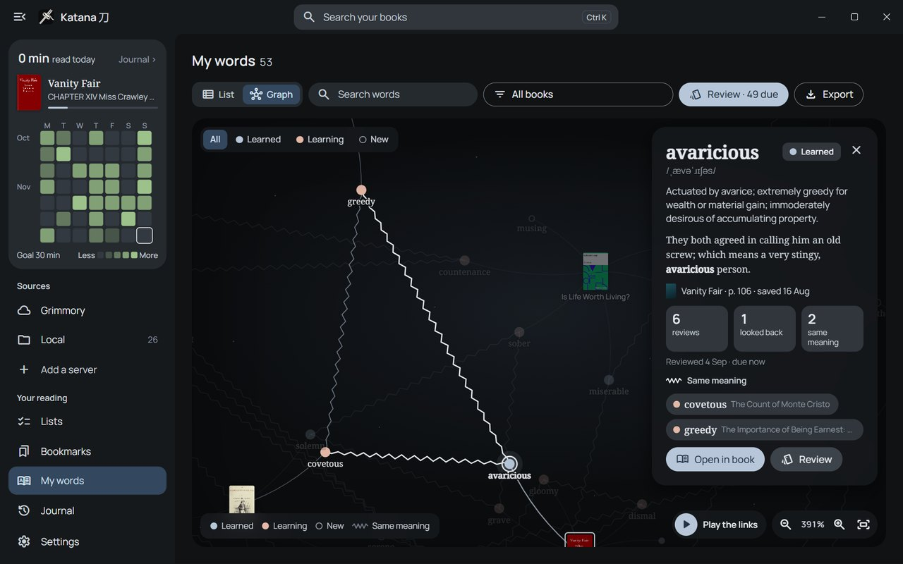
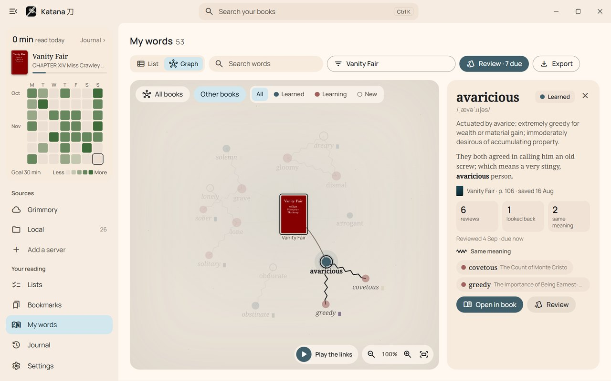

Katana Desk刀
A reader for your computer that keeps up with your book server.
Katana Desk is Katana for Windows and Linux. It reads the books on your Grimmory server and the ones already sitting in your folders, and it keeps your place, highlights and bookmarks in sync. So you can read a chapter at your desk, pick up the tablet later, and land on the same page.

For Windows 10 and 11, and Linux
- Windows: an installer, no admin needed
- Linux AppImage: runs on any distro and updates itself
- .deb for Debian, Ubuntu and Mint, or .rpm for Fedora and openSUSE
Windows may say the app isn't common yet: click More info, then Run anyway. On Linux, make the AppImage
runnable first (chmod +x). The Windows app and the AppImage check for updates once a day and
ask before installing one, and an update keeps your books, highlights and words.
What it does
- Reads EPUB, MOBI, AZW3, FB2, PDF, DjVu and comics (CBZ and CBR).
- Your whole Grimmory library shows up, and books download for offline reading, picking up where they stopped if the connection drops.
- Your reading place, highlights and bookmarks sync both ways, so they show up in Katana on Android, Grimmory's web reader and KOReader too.
- Reads the books in your own folders where they are, keeping the folder structure.
- Highlights and notes in five colours and four styles, in books and PDFs, and a Markdown export of all of them.
- Double-click any word for its meaning. English Wiktionary and WordNet are built in and work offline, and your own StarDict dictionaries work too. Save words and go over them as flashcards.
- My words as a graph: each book with the words you saved from it, words that mean the same joined across books, and a replay of how they met, in the order you saved them.
- A Journal of your reading: the days you read, streaks, books finished and the hours you read most.
- Ctrl K finds anything: books, authors, highlights, notes, bookmarks and words.
- Eight themes, your own covers for any book, reading lists, and a second window when you want two books open.




What it isn't
It isn't trying to be a reader with every feature piled in. It does the reading things that matter to me, and I'll keep fixing what breaks. If you want something it doesn't do, fork it and make it yours with whatever AI agent you like to work with.